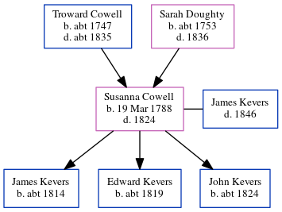

Susanna Kevers (née Cowell) 1788 - 1824
[ Home ] | [ Calendar ] | [ Surnames Index ] | [ Errors ] | [ Family History ]The 6th of 7 children of Troward Cowell and Sarah Doughty, Susanna Cowell, the four times great-aunt of Nigel Horne, was born in St Peters, Thanet, Kent, England on 19 Mar 17881, was baptised there on 18 May 1788 and married James Kevers (with whom she had 3 children: James, Edward and John) in Margate, Kent, England on 13 Oct 18082.
She died in 1824 in Margate1 and was buried there at St John the Baptist Church on 30 Mar 18243,4.
Parents
- Troward was born c. 1747
- Sarah was born c. 1753
Children
- James was born c. 1814
- Edward was born c. 1819
- John was born c. 1824
Citations
- East Kent Burial Index - Findmypast
- England Marriages 1538-1973 - Findmypast
- Kent Burials - Findmypast
- England Deaths & Burials 1538-1991 - Findmypast
Media
Canterbury Baptisms - GBPRS/CANT/B/96345813
England Marriages 1538-1973 - R_847895035/2
England Marriages 1538-1973 - R_848616393/2
England Marriages 1538-1973 - R_848615062/2
Canterbury Burials - GBPRS/CANT/D/95195638
East Kent Burial Index - GBPRS/D/407068614/1
England Deaths & Burials 1538-1991 - R_276585919
Family Tree
Map
Generated by ged2site. Last updated on Jul 3, 2024
Known Issues
Parent Troward is listed in the residence for 1790, but this child is not